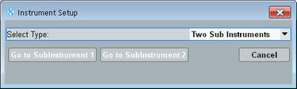

To open the "Instrument Setup" dialog box, press the DEVICE key on the (soft-) front panel.
In multiple-window mode, the key and the dialog box are not available. Instead, the settings can be accessed directly from the main window, see "Main Window in Multiple-Window Mode".
The settings are only relevant for instruments that can be split into subinstruments. Whether your instrument can be split, depends on the instrument model and the installed options.
Each subinstrument is addressed separately and equipped with independent hardware and software resources to run the tasks assigned to it. A subinstrument contains at least one RX and one TX signal path and one baseband measurement board.

Selects the number of subinstruments. The offered values depend on the available hardware.
Changing this setting also affects the assignment of firmware applications to the subinstruments. The task bar is reset (cleared).
In the factory default configuration, all resources are grouped in a single subinstrument. Splitting the instrument can help to run tasks in parallel.
Remote command:These buttons select the subinstrument number n for manual control. Remote control of the subinstruments is independent of this setting.
To facilitate the distinction between the subinstruments, the GUIs of the subinstruments use different colors for the background and the active softkeys and hotkeys.
Remote command:n/a